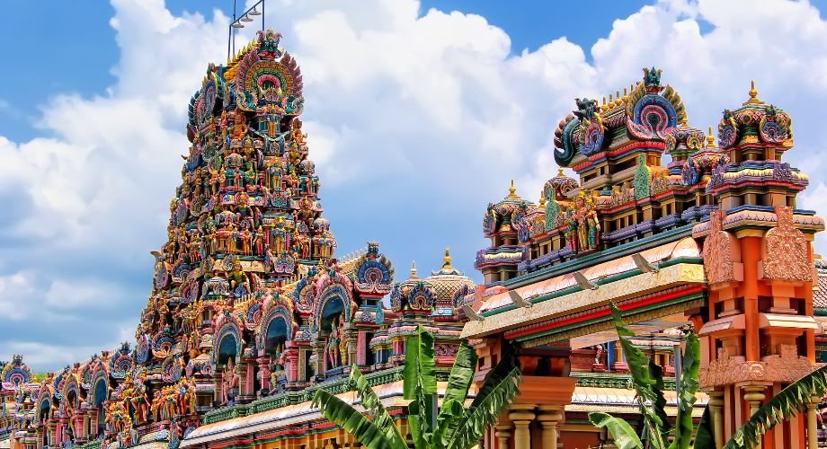

Rio de Janeiro, Brazil

Berlin, Germany

Kuala Lumpur, Malaysia

1) Visit the Batu Caves:
This Hindu temple complex with caves is one of the most famous attractions in Kuala Lumpur. The
caves are located about 12 km from the heart of Kuala Lumpur and are home to a large statue of Lord
Murugan (a Hindu deity). It takes about an hour to explore all the caves, but there are plenty of
shops around if you need something or want to grab lunch before heading back down.
2) Visit KLCC:
Kuala Lumpur City Centre or KLCC is of the tallest building in the world